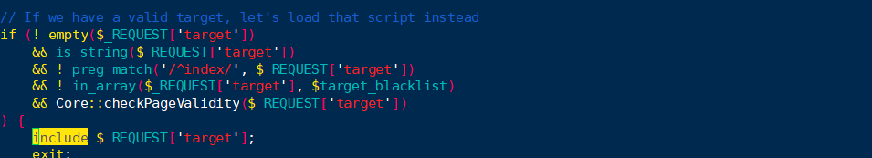
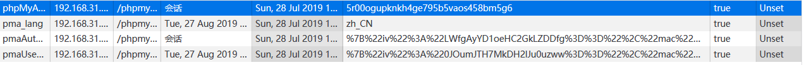

0X01 什么是文件包含漏洞
程序开发人员通常会把可重复使用的函数写到单个文件中，在使用其他函数时，可以直接调用此文件，无需再次编写此函数，这种文件调用的过程一般称之为包含。
程序开发人员都希望代码使用更加灵活，所以通常会将被包含的文件设置为变量，来进行动态调用。正是这种灵活性，可能导致客户端可以调用一个恶意文件，造成文件包含漏洞。造成包含漏洞的原因是：通过服务器脚本的函数引用文件时，由于传入的文件没有经过合理的校验和过滤，从而操作了预想之外的文件，导致意外的文件泄露、恶意代码的注入等。
文件包含分为两种：一种是本地文件包含，另一种是远程文件包含
0x02 文件包含漏洞涉及到的函数
文件包含涉及到的四个函数分别是：include（）、include_once()、 require()、require_once（）。
include()：包含并运行指定的文件，包含文件发生错误时，程序会警告，但会继续执行。
include_once()：和include类似，不同处在于include_once()会检查这个文件是否已经被导入。如果已经导入，便不会再导入。这个可以理解为只导入一次。
require()：包含并运行指定的文件，包含发生错误时，程序直接终止执行。
require_once()： 和require类似，不同处在于这个函数只导入一次
0x03 phpMyadmin漏洞介绍
0x04 漏洞描述
在phpMyadmin4.8.0和phpMyadmin 4.8.1两个版本中，程序没有严格控制用户的输入,攻击者可以利用双重编码绕过程序的白名单限制，造成文件包含漏洞0x05 漏洞细节所在
在网站根目录文件夹下的index.php文件配置文件下第56行
分析这五个if判断可以得到以下几个判断：
1.是否存在target参数；
2.target参数是否为字符串；
3.值不能以index开头；
4.值不能出现在$target_blacklist里面；
5.将参数传到Core类的checkPadgeValidity函数进行判断；
6.参数traget是用include()进行调用。
再来看一下checkPadgeValidity函数：

在上面两图中，一共有三个地方的返回值是true，这三个if区间都有一个特点就是：$page参数都必须是要在白名单中才会放回true
观察上两图的if区间可以获取以下信息：
1.将参数$goto_whitelist赋值给白名单；
2.判断参数$page是否为字符串；
3.$page参数直接与$whitelist进行对比，判断参数$page是否在白名单中
4.查找参数$page赋值字符串里的“？”第一次出现的位置，显示长度为0。再与参数$whitelist作比较。即为将参数page放在？之前
5.使用函数urldecode将$page里的函数编码成%开头的字符，然后再将编码后的page参数截取，最后再是与$whitelist进行比较。这里可以使用二次编码，%253传入时，会被自动解码一次，变成%3f，然后再用urldecode（）再解码一次，就变成了？，绕过白名单限制。
部分白名单截图如下：
在include()函数调用下，包含情况是这样的
include db_sql.php%3f/../../../.
0x06 通过php日志session来包含文件
0x07 什么是session
每当我们登陆phpmyadmin时，网站后台会生成一个相对应的sess_sessionID的文件，然后我们在里面所执行的任何操作都会有记录，如果传入的是一个可执行的php文件，那么也可以执行。0x08 查看自己的sessionid
打开sql查询 ，执行SQL语句
打开网页的控制台，获取自己的sessionID

打开后台查看自己的sessionid文件：

访问网址为：http://192.168.31.238/phpmyadmin/index.php?target=db_sql.php%253f/../../../../../../../../../../../../var/lib/php/session/sess_pcgkv1kfiqgstqnjmkmoeh8mnulht0ag
可以看到包含sessionID文件执行成功。
这个包含只是其中的一个方法，还有一个方法是可以在sql查询里面使用file_put_contents函数建立一个文件，再在这个文件里写上一句话木马，再使用菜刀连接。